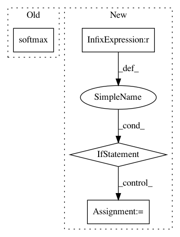

4421754f9886233e90563eb8088348bb36024095,niftynet/layer/loss_segmentation.py,LossFunction,layer_op,#LossFunction#Any#Any#Any#,46
Before Change
pred_b = tf.reshape(pred_b, [-1, self._num_classes])
if self._softmax:
pred_b = tf.nn.softmax(
tf.cast(pred_b, dtype=tf.float32))
ground_truth_b = ground_truth[b_ind]
weight_b = None if weight_map is None else weight_map[b_ind]
loss_params = {
After Change
spatial_shape = pred_b.get_shape().as_list()[:-1]
ref_shape = spatial_shape + [-1]
ground_truth_b = tf.reshape(ground_truth[b_ind], ref_shape)
if ground_truth_b.get_shape().as_list()[-1] == 1:
ground_truth_b = tf.squeeze(ground_truth_b, axis=-1)
if weight_map is not None:
weight_b = tf.reshape(weight_map[b_ind], ref_shape)
if weight_b.get_shape().as_list()[-1] == 1:
weight_b = tf.squeeze(weight_b, axis=-1)
In pattern: SUPERPATTERN
Frequency: 4
Non-data size: 4
Instances
Project Name: NifTK/NiftyNet
Commit Name: 4421754f9886233e90563eb8088348bb36024095
Time: 2018-01-12
Author: wenqi.li@ucl.ac.uk
File Name: niftynet/layer/loss_segmentation.py
Class Name: LossFunction
Method Name: layer_op
Project Name: NifTK/NiftyNet
Commit Name: 3a5ace850931e91c55a692ae7ec716a57e66f4e6
Time: 2018-01-26
Author: wenqi.li@ucl.ac.uk
File Name: niftynet/layer/loss_segmentation.py
Class Name: LossFunction
Method Name: layer_op
Project Name: ray-project/ray
Commit Name: e153e3179f54819e06c07df21bbf49e260dec5f2
Time: 2020-04-01
Author: sven@anyscale.io
File Name: rllib/utils/exploration/parameter_noise.py
Class Name: ParameterNoise
Method Name: postprocess_trajectory
Project Name: NifTK/NiftyNet
Commit Name: addcb13fb3dcd2cdbc32ac81611a78ac1c19b02f
Time: 2017-08-23
Author: egibson@cs.ucl.ac.uk
File Name: niftynet/network/dense_vnet.py
Class Name: DenseVNet
Method Name: layer_op